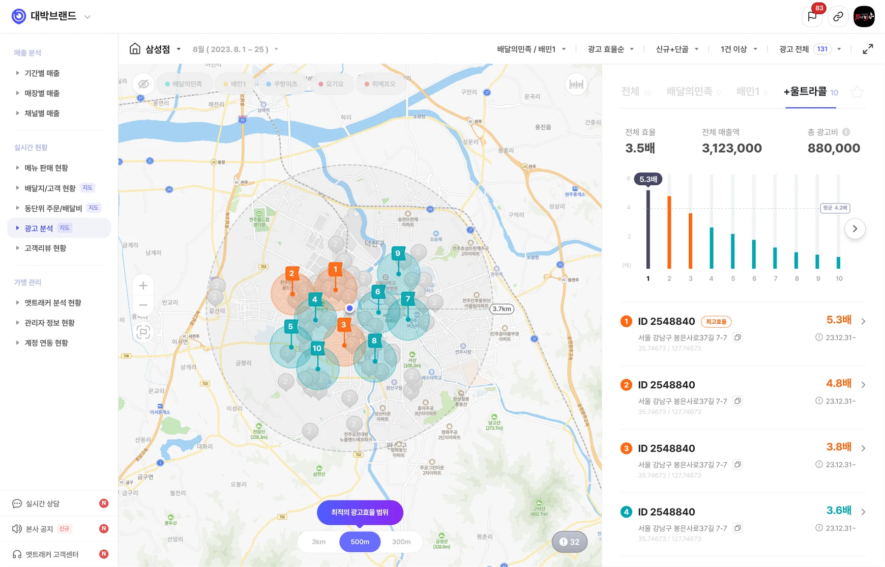
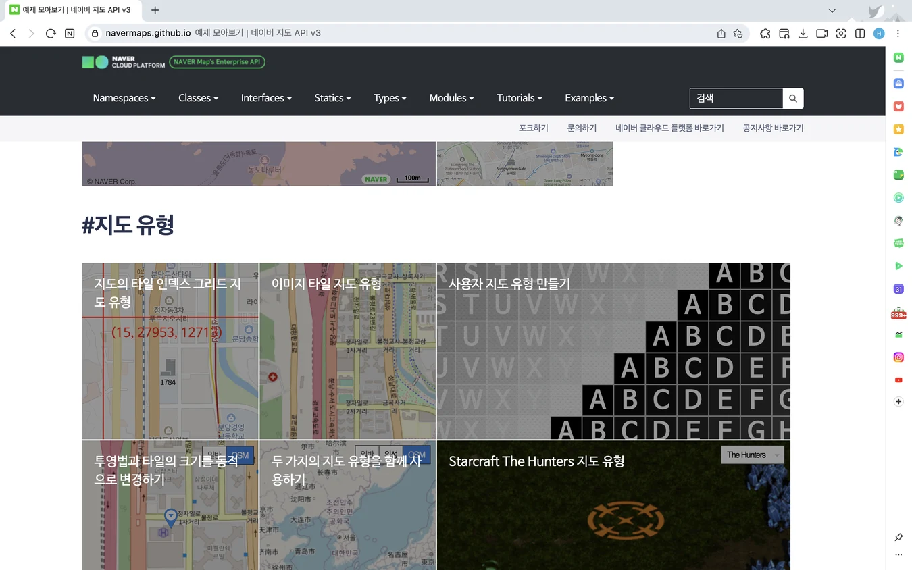
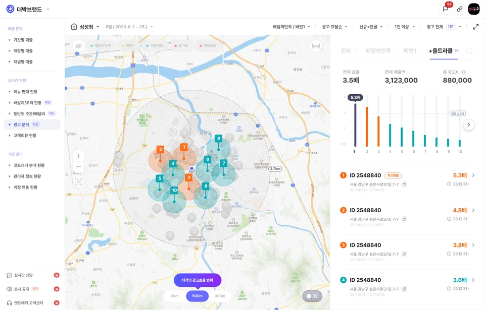

Overview
VOC로 제품이 놓친 사용자 니즈를 발견하고 재설계하기
VOC와 영업 미팅에서 반복적으로 확인된 고객 요구를 바탕으로 광고 분석의 목적을 ‘새로운 위치 탐색’에서 ‘운영 중인 광고의 성과 분석과 의사결정 지원’으로 전환했습니다. ROAS를 핵심 지표로 설정하고 지도 기반 탐색 환경과 스크래핑 데이터의 특성을 고려해 Web·App 경험을 설계했습니다. 개선 이후 잠재 고객사 7곳 중 4곳이 신규 가입했고 기존 고객사 21곳 중 17곳에서 긍정적인 반응을 확인했습니다. 또한 후속 니즈를 발견해 광고 집행 위치 결정을 지원하는 신규 서비스 논의로 확장했습니다.
VOC를 통한 사용자 니즈 파악
2023년 1~6월 기능 개선 요청 VOC 현황
주요 요청 사항 → 운영 중인 광고의 성과 판단
비즈니스 영향 검토
- 01 고객 유지실제 사용자 이탈과 연결되는 문제인가?
- 02 매출 및 재계약필요 기능 부재가 재계약과 매출에 영향을 미치는가?
- 03 신규 도입 전환기능 개선이 잠재 고객의 가입 결정에 기여할 수 있는가?
Background
사용자들은 새로운 광고 위치 탐색이 아닌 사용 중인 광고 분석을 원하고 있었어요.
2023년 1~6월 수집한 VOC에서 광고 분석 기능 요청이 전체의 52%로 가장 높은 비중을 차지했습니다. 광고 분석 기능은 배달의민족 광고 상품인 ‘울트라콜’의 새로운 광고 위치를 탐색하는 기능이며 앳트래커의 주요 고객인 프랜차이즈와 자영업자가 가장 많이 이용하는 배달 플랫폼 배달의민족의 광고 운영에 도움을 주는 기능입니다.
VOC 분석 결과 사용자는 ‘새로운 위치 탐색’이 아닌 ‘운영 중인 광고의 성과 분석과 의사결정 지원’을 필요로 하고 있었으며 신규 영업 미팅에서도 같은 요구가 반복되었으며 일부 잠재 고객사는 해당 기능이 제공되면 가입하고 싶다는 의사를 밝혔습니다.
이를 바탕으로 프로젝트의 필요성과 우선순위를 함께 논의한 결과 기존 고객의 반복된 요구를 충족하지 못하면 서비스 이탈로 이어지고 재계약에도 부정적인 영향을 주어 매출 손실로 이어질 수 있다고 판단했습니다. 또한 잠재 고객의 가입 의사에서 신규 도입으로 이어질 가능성을 확인하고 광고 분석 개선 프로젝트를 진행했습니다.
점주 · 3명 심층 인터뷰
어떤 광고를 유지·중단해야 할지 모르겠어요.
상황
운영 중인 광고의 유지·중단 여부 결정
기존 업무 방식
전체 주문·매출과 광고 위치를 따로 확인
판단을 막는 요인
광고별 비용 대비 성과를 비교할 근거 부족
기존 광고를 유지하거나 전체 매출을 바탕으로 조정 → 광고 운영 판단에 필요한 성과 정보의 부재
프랜차이즈 본사 · 3곳 심층 인터뷰
여러 지점의 광고 성과를 일일이 파악하기 어려워요.
상황
예산 분배를 위한 지점별 광고 성과 판단
기존 업무 방식
광고 현황과 실적을 개별적으로 확인
판단을 막는 요인
전 지점 광고 성과를 한눈에 파악하기 어려움
지점별 성과 확인과 문제 지점 탐색에 많은 시간 소요 → 광고별 조정 대상과 지점별 현황 파악이 어려움
Discovery
운영 중인 광고 성과를 파악하지 못해 조정이 필요한 광고를 찾기 어려웠어요.
사용자가 광고 성과를 통해 어떤 결정을 하고 싶은지 파악하기 위해 점주 3곳과 프랜차이즈 본사 3곳의 심층 인터뷰를 진행하고 성과를 확인하는 상황과 기존 업무 방식, 판단을 막는 요인, 실제 진행한 업무에 대한 공통된 의견을 정리하고 분석해 보았어요.
점주는 광고별 비용 대비 성과를 비교하기 어려워 기존 광고를 유지하거나 전체 매출을 바탕으로 조정 여부를 판단하고 본사는 여러 지점의 광고 현황과 실적을 개별적으로 확인해야 해서 지점별 성과를 파악하고 문제 지점을 찾는 데 많은 시간과 노력이 들었습니다.
Problem
- 운영 중인 광고의 성과를 비교할 수 없어 유지·중단을 판단하기 어려움
- 지도를 수동으로 탐색하여 누락 데이터가 발생하고 문제 지점을 찾기 어려움
- 프랜차이즈 본사가 여러 지점의 광고 현황을 개별적으로 확인하여 전체 성과 파악에 많은 리소스가 듦


Hypothesis
- 운영 중인 광고의 성과 비교와 지역·지점별 현황을 제공하면 사용자의 탐색 시간을 줄이고 광고의 유지·중단에 대한 의사결정을 지원할 수 있을 것이다. 이러한 개선은 기존 고객의 서비스 만족도를 높이고 광고 분석 기능을 요구한 잠재 고객의 신규 가입으로 이어질 것이다.
Strategy 01
광고 효과를 측정하는 최적화된 데이터 찾기
사용자들이 필요로 하는 현재 운영 중인 광고 성과를 제공하기 위해 광고를 운영했을 때 실제로 측정 가능한 데이터 항목을 먼저 파악했습니다.
노출수·클릭수는 과정 지표로 광고에 대한 사용자 반응을 보여주지만 해당 반응이 실제 매출로 이어졌는지까지 알기 어려웠고 매출액·주문수는 결과 지표로 비즈니스 성과를 알 수 있지만 이를 광고비와 함께 해석할 수 있는 기준이 필요했습니다. 또한 앳트래커의 사용자인 프랜차이즈와 자영업자는 광고를 마케팅 관점이 아닌 비용 관점에서 광고의 지속, 중단, 확대를 판단하였기 때문에 투입 대비 성과를 보여줄 수 있는 지표가 필요했어요.
이러한 점들을 고려하여 투자 대비 매출 효율을 통해 광고 성과 판단을 할 수 있는 메인 지표로 광고효율(ROAS)을 설정하고 스크래핑할 수 있는 관련 성과 지표인 광고 매출액, 노출수, 클릭수, 주문수, 클릭률을 함께 노출하기로 정의하였습니다.
네이버 지도 API



Strategy 02
복잡한 지도 환경에서도 사용자가 필요한 데이터를 빠르게 탐색할 수 있는 옵션 찾기
울트라콜은 위치 기반의 광고 상품으로 광고 성과를 분석할 때 지도 환경과 정량적 성과 데이터를 함께 제공하고자 했어요. 그래서 서비스에서 사용 중인 네이버 지도 API 옵션이 적용된 실제 화면을 TEST하면서 사용자가 지도를 쉽게 컨트롤하고 원하는 데이터를 빠르게 찾을 수 있는 옵션을 검토했습니다.
- Zoom Control → 탐색 범위 조절
전체 광고 분포에서 관심 지역과 개별 광고로 탐색 범위를 단계적으로 좁힐 수 있도록 확대·축소 기능을 적용했습니다. 이를 통해 사용자가 목적에 맞는 광고를 빠르게 탐색할 수 있도록 했습니다. - Marker Clustering → 밀집된 광고 핀의 가독성과 성능 최적화
많은 광고 핀을 한 번에 표시하면 핀이 겹쳐 위치와 성과를 구분하기 어렵고 지도 렌더링 부담도 커질 수 있어 인접한 핀을 그룹화해 넓은 범위에서는 전체 분포를 파악하고 지도를 확대하면 개별 광고를 확인할 수 있도록 클러스터링을 적용했습니다. - Map Filter → 분석 조건에 맞는 데이터 선별
사용자마다 확인하려는 성과 지표와 탐색 범위가 달라 필요한 조건에 맞는 광고를 확인할 수 있도록 필터를 적용해 전체 광고를 일일이 탐색해야 하는 부담을 줄였습니다.
스크래핑 데이터 상태별 대응 원칙
| 스크래핑의 제약 | 확인이 필요한 정보 | 대응 원칙 |
|---|---|---|
| 실시간 데이터가 아님 | 데이터의 기준 시점 | 업데이트 시점·출처 표시 |
| 수집 과정에서 오류 발생 | 현재 데이터 수집 상태 | 로딩·에러 상태 구분 |
| 일부 데이터 누락 | 확인 가능한 데이터 범위 | 누락 상태 안내 |
사용자가 데이터 수집 기준과 현재 상태를 이해한 뒤 성과를 판단할 수 있도록 대응 원칙 수립
Strategy 03
스크래핑 데이터의 신뢰와 정확성 높이기
서비스 특성상 데이터를 실시간 API가 아닌 스크래핑 방식으로 수집하고 있어 최신 데이터 반영이 지연되거나 일부 값에 오류와 누락이 발생할 수 있었습니다. 이에 발생 가능한 오류 패턴과 제약을 파악하고 수집 상태가 사용자의 광고 운영 판단에 미치는 영향을 검토했습니다.
데이터 상태를 명확히 안내하지 않으면 과거의 데이터를 현재 성과로 인식하거나 수집 오류와 누락을 실제 성과 저하로 해석할 수 있다고 판단했습니다. 특히 실제 성과가 없는 0과 데이터를 확인할 수 없는 상태를 명확히 구분할 필요가 있었습니다.
이에 사용자가 데이터의 기준 시점과 확인 가능한 범위를 이해하고 수집 상태를 고려해 광고 성과를 판단할 수 있도록 설계했습니다.

새로운 광고 위치를 직접 수동으로 탐색 현재 운영 중인 광고의 효율을 한눈에 분석Solution 01
지도와 정보 영역을 분리해 위치 기반으로 광고 성과를 빠르게 파악할 수 있도록 설계했어요.
기존에는 운영 중인 광고별 성과를 파악할 수 없어 광고를 유지·중단할 결정 근거가 부족했고 지도 위에서 위치 커서를 직접 움직이며 수동으로 데이터를 탐색해야 하여 탐색하지 않은 데이터를 놓칠 수 있었습니다.
이를 해결하기 위해 지도 영역과 정보 영역으로 나누어 위치 기반으로 수치 데이터를 파악할 수 있도록 구조를 잡고 광고 효율을 핵심 판단 기준으로 설정하고 ROAS = (광고 매출액 ÷ 광고 운영비) × 100으로 광고별 효율을 산출했습니다.
지도 영역에서는 광고 효율이 높은 핀은 주황색, 낮은 핀은 청록색으로 구분하고 정보 영역에는 상단에 전체 성과를 차트로 요약하고 하단에는 광고별 효율·ID·주소·집행 기간을 제공해 전체 현황에서 개별 광고의 상세 정보까지 단계적으로 확인할 수 있도록 구성했습니다.
이를 통해 사용자는 전체 광고 분포를 확인하고 효율이 낮은 광고를 발견하여 운영 조정 대상을 선별하고 광고의 유지·중단을 검토하는 데 필요한 근거를 확인할 수 있게 되었습니다.
Solution 02
전체 현황에서 개별 광고까지 문제 광고를 빠르게 찾고 관리할 수 있어요.
점주는 매장의 여러 광고를 비교하기 어려웠고 프랜차이즈 본사는 여러 지점의 광고를 개별적으로 확인해야 해 전체 현황을 파악하는 데 많은 시간이 필요했습니다. 이에 관리 범위와 분석 목적에 따라 탐색 구조를 구분했습니다.
점주 페이지에서는 전체 광고 현황 → 광고별 성과 비교 → 개별 광고 순서로 구성해 운영을 조정할 광고를 찾도록 했습니다. 프랜차이즈 페이지에서는 전국 광고의 분포와 효율을 먼저 제공하고 마커 클러스터링과 지도 확대·축소를 통해 전국 현황 → 관심 지역 → 지점별 성과 → 개별 광고 순서로 탐색 범위를 좁히도록 설계했습니다.
이를 통해 점주는 조정이 필요한 광고를 선별해 상세 성과를 확인하고 본사는 각 지점을 하나씩 확인하지 않고도 전체 현황에서 성과를 살펴볼 지점과 광고까지 단계적으로 탐색할 수 있게 되었습니다.
Solution 03
분석 목적에 따라 원하는 지표와 범위를 선택해 데이터를 확인해요.
기존에는 광고 위치별 매출액만 확인할 수 있어 노출·클릭·주문·광고 효율 등 목적에 따른 성과 비교가 어려웠습니다. 또한 광고 핀의 반경을 변경할 수 없어 필요한 지역 범위에 맞춰 광고 성과를 탐색하고 비교하는 데 한계가 있었습니다.
이에 광고를 운영하는 목적에 따라 필터를 통해 원하는 데이터를 얻을 수 있도록 했습니다. 또한 실제 광고가 적용되는 3km에서는 전체 광고 분포와 효율을 확인하고 500m에서는 인접한 광고의 효율과 주변 성과를 비교하고 300m에서는 특정 광고 주변의 성과를 집중적으로 확인하여 사용자가 분석 목적에 따라 필요한 정보에 집중할 수 있도록 설계했습니다.
Solution 04
모바일에서도 지도 탐색과 광고 분석 흐름이 끊기지 않도록 최적화했어요.
모바일의 제한된 화면과 터치 기반의 사용성을 고려해 광고 탐색 인터랙션과 정보 구조를 재설계했습니다. 광고 핀은 좌우 스와이프로 전환하도록 하여 지도에서 여러 광고를 연속적으로 탐색할 수 있도록 했고 선택한 광고의 상세 정보는 바텀시트에 배치해 지도 맥락을 유지하면서 성과 데이터를 확인하도록 구성했습니다. 필터는 별도의 모달에서 설정하도록 분리해 다수의 필터 옵션을 조작할 때 발생할 수 있는 오선택과 선택 사항을 명확하게 확인할 수 있도록 행동 단계를 나눴습니다.
그 결과 사용자는 모바일 환경에서도 여러 광고를 연속적으로 비교하고 지도 탐색 맥락을 유지하면서 필요한 성과 정보와 필터 조건을 확인할 수 있게 되었습니다.
57%
잠재 고객 신규 가입 전환
요청 기능을 확인한 잠재 고객사 7곳 중 4곳이 신규 가입을 완료했습니다.
81%
기존 고객 긍정 피드백
기존 고객사 21곳 중 17곳에서 광고 효율을 쉽게 파악하고 운영 판단에 활용할 수 있다는 긍정적인 반응을 확인했습니다.
NEXT
광고 위치 추천 서비스로 확장
‘다음 광고를 어디에 집행할 것인가’라는 후속 문제를 발견해 신규 서비스 논의로 이어졌습니다.
Results
긍정적인 고객 반응과 신규 가입 전환, 후속 제품으로의 확장 가능성을 확인했어요.
광고 분석 출시 후 고객 반응을 통해 운영 중인 광고의 성과를 제공하는 방향이 실제 광고비 관리와 운영 판단에 유의미하다는 점을 확인했습니다. 이는 광고 분석의 목적을 ‘새로운 위치 탐색’에서 ‘현재 광고의 성과 판단’으로 전환한 제품 방향이 고객의 핵심 니즈와 맞닿아 있었음을 보여주었습니다.
또한 고객의 요구가 현재 성과를 확인하는 데서 끝나지 않고 축적된 데이터를 바탕으로 다음 광고 집행 방향을 제안받고 싶은 니즈로 이어진다는 점을 발견했습니다. 이를 통해 광고 분석을 현황 조회 기능에서 광고 집행 의사결정을 지원하는 경험으로 확장할 가능성을 확인했습니다.